A local-first interview intelligence platform that evaluates engineering candidates on accumulating evidence, not keywords. Every score traces to specific answers — and a later answer that reveals deeper understanding retroactively lifts the confidence of earlier, shorthand ones. Runs fully local on Ollama; switches to Anthropic Claude with a config flag.
Most automated screening collapses a candidate into keyword overlap. rejected.ai instead runs a conversation, extracts concept-linked evidence from each answer, and recomputes confidence over the entire ledger after every turn — so the assessment is explainable, self-correcting, and honest about what it can and cannot measure.
Each answer yields positive/negative evidence tied to specific competencies. The evidence ledger is the source of truth — every score cites the turns that justify it.
Confidence is never frozen. When a later answer reinterprets an earlier shorthand one, the earlier evidence is revised — with the revision logged for replay.
Every competency is scored cool (skeptical), normal (balanced), and hot (generous), so a reader sees the range of defensible interpretations, not a single opaque verdict.
An Architect, EM, Staff+, Operator, ATS, Comms, and AI-Native persona each assess independently — surfacing where reasonable evaluators would disagree.
Dedicated evaluations for soft skills like conflict resolution, mentoring, and alignment. Adapts scores and coaching recommendations specifically for leadership indicators.
Audio and video produce only counted signals — pace, fillers, engagement, attention. The system deliberately refuses to infer honesty, intelligence, or personality.
Each turn's answer is recorded with low latency during the live interview. When generating the report, a background thread replays the session, extracting evidence and rescoring confidence turn-by-turn. Because the whole history is re-evaluated sequentially, re-scoring earlier answers in light of later ones is structural — not a bolt-on.
…repeated sequentially per turn, with a confidence snapshot captured each time for retroactive re-scoring & replay.

Confidence isn't accumulated incrementally — it's recomputed from scratch over the full evidence ledger on every turn. That makes retroactive re-scoring a property of the design, so a terse early "duplicate handling" can be lifted once a later answer explains idempotency and exactly-once semantics.
Every competency score, strongest signal, risk, and the final hiring recommendation carries citations to the exact turns behind it. The report includes score-evolution sparklines and a revision log — you can audit how a number moved and why.
Evaluating technical skills is only half the battle. rejected.ai includes a first-class HR Round module specifically engineered to map, score, and cite behavioral traits, communication clarity, and leadership capabilities.
Swaps out technical compiler/system gaps for soft-skill expectations. Measures indicators such as peer alignment, data-driven conflict resolution, and structured mentoring.
The evaluator panel leverages a specialized Engineering Manager persona focused on team integration, growth action planning, and seniority gap assessments.
Generates tailored mock coaching items detailing growth action plans, study paths, and communication coaching depending on high or low score evaluations.
type Interview struct {
ID bson.ObjectID `bson:"_id"`
CandidateProfileID bson.ObjectID `bson:"candidate_profile_id"`
Level string `bson:"level"` // e.g., "Staff Engineer"
Type string `bson:"type"` // "System Design", "Technical Screening", "HR Round"
RigorPercent int `bson:"rigor_percent"`
Competencies []string `bson:"competencies"` // behavioral or technical competencies
Status Status `bson:"status"`
}Seventeen small, single-responsibility packages behind a stdlib net/http router. LLM generation, embeddings, and the database all sit behind interfaces, so backends swap by config rather than code change.
| Package | Responsibility |
|---|---|
documents | JD / resume ingestion — PDF/DOCX/TXT extraction + LLM structuring |
capability | Candidate, target, and gap capability graphs |
interview | Session orchestration, dynamic question generation, memory |
evidence | Concept-linked evidence extraction into the ledger |
confidence | Core: recompute over the full ledger + retroactive re-scoring |
assumptions | Per-answer assumptions + clarification-vs-deflection |
evaluators | Persona panel — Architect / EM / Staff+ / Operator / ATS / Comms / AI-Native |
risk · recommendation | Risk categorization + explainable, evidence-cited hire decision |
report | Orchestrates scores + personas + signals + risk + recommendation |
media | Measurable-only audio & video signals (pluggable engines) |
learning | Deterministic cross-interview competency trends |
llm · store · config · api | Backend interfaces, MongoDB, config, HTTP router |
Get the complete Go backend and Next.js frontend running on your machine in a few steps.
Make sure you have the following installed and running locally:
Pull the required Ollama models for local inference & embeddings:
$ ollama pull gemma4:e4b
$ ollama pull nomic-embed-textCopy the configuration file template and edit variables if necessary:
$ cp config.example.json config.jsonCompile and start the HTTP server. It will bind to http://localhost:8080:
$ go build -o bin/server ./cmd/server
$ ./bin/serverInstall Node packages and launch the Next.js development server on http://localhost:3000:
$ cd web
$ npm install
$ npm run devRun the insert helper script to automatically populate MongoDB with dummy interview rounds. This includes the new Sarah Connor HR behavioral round:
$ go build -o bin/insert_dummy ./cmd/insert_dummy/main.go
$ ./bin/insert_dummyOnce complete, refresh `http://localhost:3000` to review the records, trace turn histories, and inspect generated hiring panels.
rejected.ai was scoped, architected, and built end-to-end as a single coherent system. It maps directly to how I work as a leader and architect.
Full Go source, the evidence/confidence core, the measurable-signal design, per-phase docs, and a Next.js report UI all live in the repository.